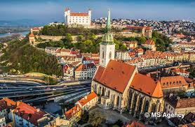

Burada Bratislava'daki deneyimlerim hakkında kısa bir yazı olacak.
Bratislava, Slovakya'nın başkenti olup, Tuna Nehri'nin kıyısında yer alan tarihi bir şehirdir. Bu şehir, Orta Avrupa'nın zengin kültürel mirasına sahiptir. Bratislava Kalesi ve Eski Şehir, şehirde gezilecek en önemli yerlerden bazılarıdır. Şehirdeki dar sokaklarda dolaşarak tarihi atmosferi hissedebilir ve Bratislava'nın sakin yaşam tarzını keşfedebilirsiniz.
 Ana Sayfa'ya Dön